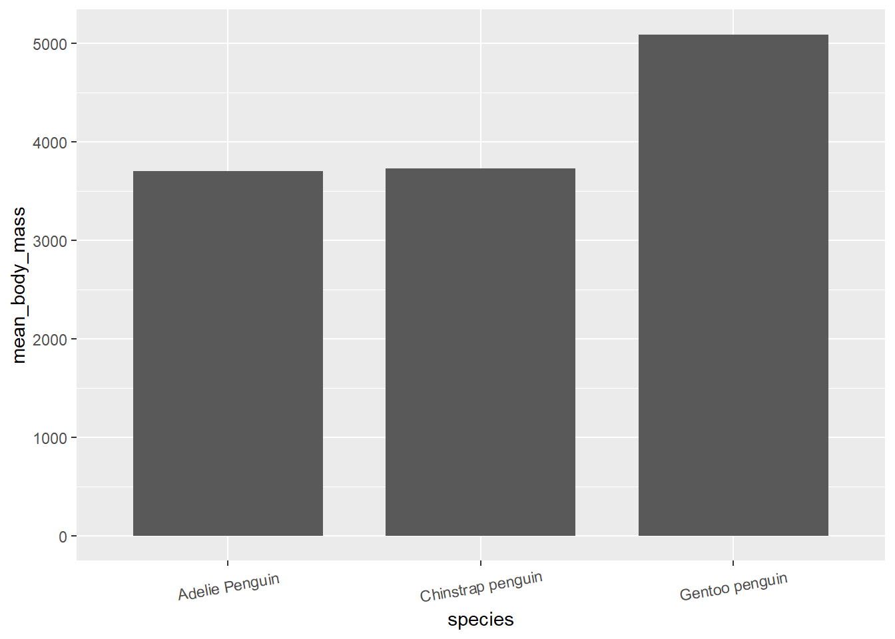
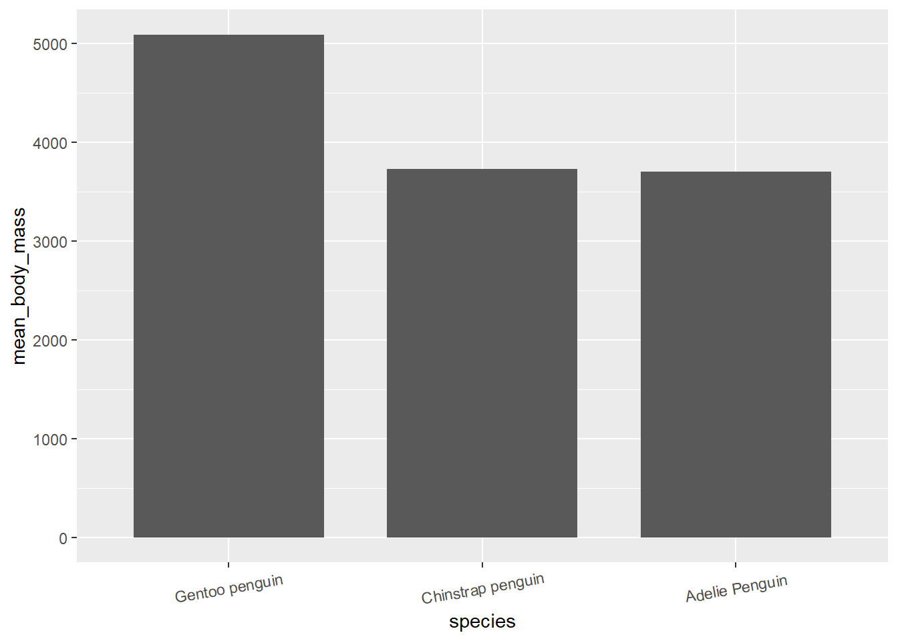
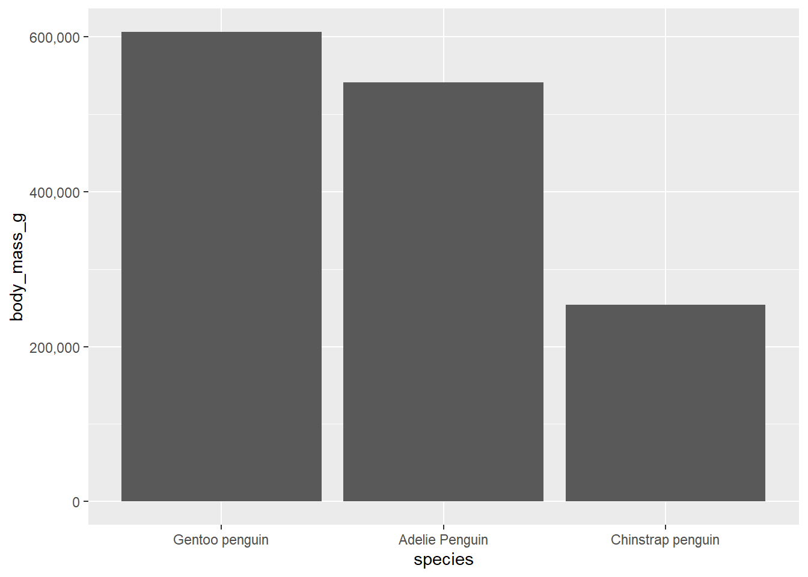

Chapter 6 Doing all the above in one go?
Another useful function, is the function fct_reorder() which comes from the package forcats.
This function is particularly (although not exclusively) useful for plots.
As default, R organizes the levels in a factor by alphabetical order.
This function allows us to alter the order by which factors are presented, according to certain conditions we can define ourselves.
For instance if we plot the mean body mass per species of penguin, we get the x-axis with (alphabettically defined) Adelie, Chinstrap and Gentoo penguins.
Lets say, we want to reorder the x-axis in a descending order according to mean body mass of each species.
# Turning species to factor
penguins_raw$species <- as.factor(penguins_raw$species)
# Original plot
penguins_raw %>%
group_by(species) %>%
summarise(mean_body_mass = mean(body_mass_g, na.rm = TRUE)) %>%
ggplot(aes(species, mean_body_mass)) +
stat_summary(fun = mean, geom = 'bar', width=.75) + # plotting the mean
theme(axis.text.x = element_text(angle = 10, vjust = 0.6)) # just to show the x-axis text better
# Reordered plot
penguins_raw %>%
group_by(species) %>%
summarise(mean_body_mass = mean(body_mass_g, na.rm = TRUE)) %>%
mutate(species = fct_reorder(species, mean_body_mass, .desc = TRUE)) %>% # organized the levels of species based on mean_body_mass (descending)
ggplot(aes(species, mean_body_mass)) +
stat_summary(fun = mean, geom = 'bar', width=.75) + # plotting the mean
theme(axis.text.x = element_text(angle = 10, vjust = 0.6)) # just to show the x-axis text better
penguins_raw %>%
mutate(species = fct_reorder(species, body_mass_g, .desc = TRUE)) %>%
ggplot(aes(species, body_mass_g)) +
geom_col() +
scale_y_continuous(labels = scales::comma_format())
# They can be also used to reorder the levels of a factor outside the plot function
# levels(fct_reorder(species, body_mass_g, .desc = TRUE))We also might wanna combine certain levels of a factor that are less represented (compared to other levels) together, instead of representing each.
For that we could use fct_lump().
list_words <- c('lol','test','random')
a <- 0
# for (word in list_words){
# print(word)
# sym(word) <- a
# a <- a+1
# }
#
# cat('lol',
# '\n', test,
# '\n', random)remove the parentheses and the text within each row of species
gsub(“\s*\([^\\)]+\)”,““,as.character(companies$Name))
Things to mention - pivot_wider / pivot_longer - drop_na() - adord_totals() - remove_empty() - get_dupes() - formating dates - fct_lump (group factors that are less represented) - coord_flip for ggplot2 plots - https://www.danieldsjoberg.com/gtsummary/